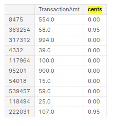

What worked and by how much--Feature engineering
Explanation from my experience in Fraud Detection Competition
What worked and what didn’t work in my journey towards a top 10% score (standing on the shoulders of giants) in the fraud-detection-competition.
Feature engineering
-
Fillna
df.fillna(-9999,inplace=True)XGB is capable of handling NaNs. It places the NaN rows in one of the splits at each node, (based on which gives a better impurity score). However if we choose a number to represent NaNs then it treats the NaNs like just another value/category. And it is a bit faster, due to lesser computations.
However
fillnaboosts the score only by0.0002. -
Label Encoding of Categorical data
All columns with <32000 unique values are made integers and label encoded. This is done to reduce the ram usage. A string in python uses almost twice as much memory as an integer. Label encoding is done using:
df.factorize() -
One hot encoding the NaN structure for certain columns
D2has 50% NaNs and is highly correlated (0.98) withD1. In this caseD2is removed and the NaN structure is alone kept.D9columns represents the time of transaction in a day. But it contains 86% NaN values. So a newD9column (HrOfDay) was created fromTransactionDTusingdf["Hr"] = df["TransactionDT"]/(60*60)%24//1/24. And the NaN structure ofD9is One Hot Encoded. -
Splitting
There are many categorical columns, that would allow for better models when split. For example, we have “TransactionAmt”, which allows for the split: “dollars” and “cents”.
centscould be a proxy for identifying if the transaction is from another country than US. Possibly there could be a pattern on how frauds happen with “cents”. The “split” is done using the following function:def split_cols(df, col): df['cents'] = df[col].mod(1) df[col] = df[col].floordiv(1)
Another example is
id_31. It has values such aschrome 65.0,chrome 66.0 for android. To aid the model we split the version number and browser using the commands below. The same has been done for several other columns, and kept if it resulted in an increase in score or featured high in the feature importance plots.lst_to_rep = [r"^.*chrome.*$",r"^.*aol.*$",r"^.*[Ff]irefox.*$"...] lst_val = ["chrome","aol","firefox","google","ie","safari","opera","samsung","edge","chrome"] df["id_31_browser"].replace(to_replace=lst_to_rep, value=lst_val, regex=True,inplace=True);
-
Combining
Combining values such as
card1andaddr1, by themselves they might not mean much, but together they could correlate to something meaningful. One such combination is the UID. But we don’t keep the UID just as we don’t keep the time columns. -
Frequency encoding
The frequency of the values of a column seems important to detect if a transaction is fraud or not.
def encode_CB2(df1,uid): newcol = "_".join(uid) ## make combined column df1[newcol] = df1[uid].astype(str).apply(lambda x: '_'.join(x), axis=1)Added several features based on this and resulted in increase in score (documented below).
-
Aggregation (transforms) while imputing NaNs
This is one of the most important parts of the solution which boosted the score all the way into top 10% from top 30%. Why Aggregations work is explained here. The aggregation is done after combining the train and test dataframes. The following
groupbycommand does it all.df_all.groupby(uid,dropna=False)["TransactionAmt"].transform("mean").reset_index(drop=True)It is very important to add
dropna=False, as there are many NaN rows which would be dropped otherwise.fillnais not done until the aggregations are made. This way, Nan’s in the aggregated column get imputed.Finding the columns to be aggregated was possible using just the AV feature importance seen above and a bit of logic.
-
Removing redundant columns based on Feature Importance
As far as I have seen, removing redundant columns makes the model faster and rarely improves the score. Having said that I tried to remove columns that seemed redundant but got the score reduced by 0.002, which is a LOT in this competition. So I kept all those variables. However removing redundant
Vcolumns (200 of them) gives a large decrease in time of computation. So those are the ones that are removed. -
Removing time columns such as
TransactionDTandTransactionID

What worked and by how much
| Method | Public LB | Private LB | Percentile | ||
|---|---|---|---|---|---|
| baseline | 0.9384 | 0.9096 | Top 80% | ||
remove 200 V |
0.9377 | -0.003 | 0.9107 | +0.001 | Top 80% |
| remove time cols | 0.9374 | -0.0003 | 0.9109 | +0.0002 | Top 80% |
Transform D |
0.9429 | +0.0055 | 0.9117 | +0.0008 | top 50% |
| Combine and FE | 0.9471 | +0.0042 | 0.9146 | +0.0029 | top 30% |
| Agg on uid1 | 0.9513 | +0.0042 | 0.9203 | +0.0057 | top 20% |
| additional agg | 0.9535 | +0.0022 | 0.9220 | +0.0017 | top 10% |
| fillna | 0.9537 | +0.0002 | 0.9223 | +0.0003 | top 10% |
References
- Data description
- Plots and much more for many features
- Top Solution , top solution model
- How the Magic UID solution Works
- Other ideas to find UIDs
- Notes on Feature Engineering
- Lessons learnt from Top solution
- Other nice EDAs, and here
- 17th place solution
- How to investigate D features
- Don’t use Time features
- Fastai tabular NN